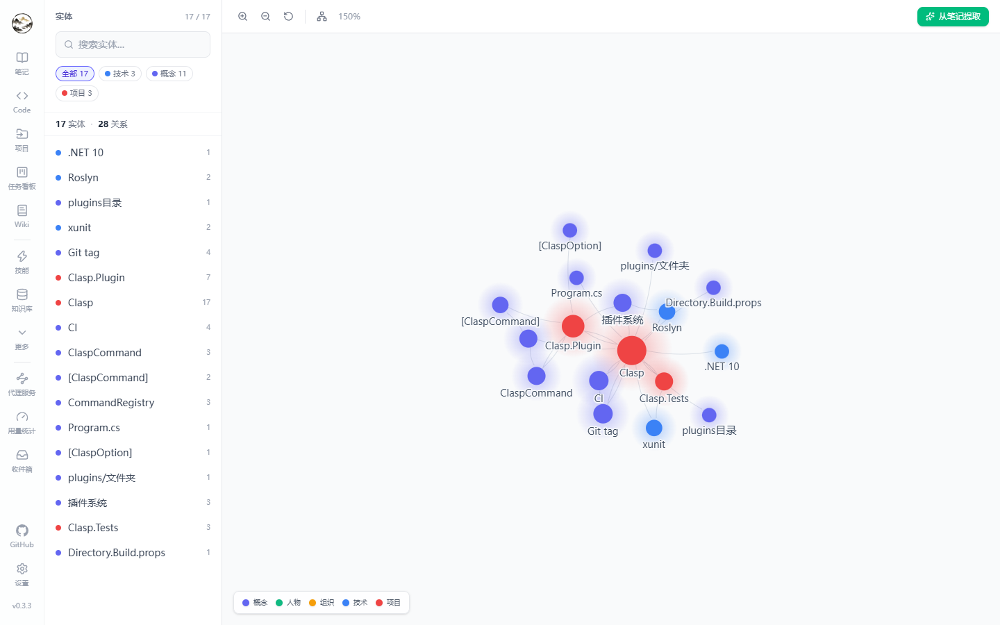
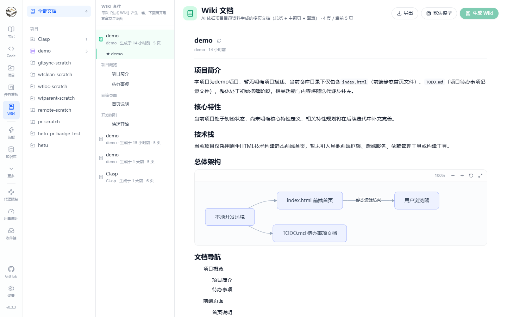

Graph & Wiki
Two ways to turn scattered content into structure: the graph extracts entities and relations, Wiki writes repository material into documents.
Knowledge graph
Extraction
- Click “Extract graph” in the note editor (or re-extract existing content).
- The LLM pulls entities (name, type) and relations (source, target, type) from the text; results are deduplicated and merged.
- Rows land in the graph tables and a background task (
GraphExtract) records duration and status.
Entity and relation types
| Entity type | Meaning |
|---|---|
| concept / technology / project | Built-in types, color-coded in the UI |
| person / organization | Sources, teams, authors |
| custom | Anything else the model reports |
| Relation | Semantics |
|---|---|
| belongs-to | Child concept → parent concept or project |
| related-to | Weak association |
| depends-on | Dependency |
| contains | Containment |
| compared-with | Comparison (common in evaluation notes) |
| custom | Other |
Visualization
| Action | Details |
|---|---|
| Zoom / pan | Wheel to zoom, drag to pan, reset view button |
| Search | Filter and highlight by entity name; filter the sidebar by type |
| Details | Click an entity for its relations, source notes and source Wiki pages; jump back to the editor or Wiki page |
| Counters | Totals for entities and relations, plus per-type counts |

Wiki generation
Inputs
- Repository material: README, directory structure, representative source files.
- Optional semantic search to add related indexed content per module.
- The model comes from Settings → Default models → Wiki generation.
Stages
| Stage | Output |
|---|---|
| Material collection | Reads the README and directory tree, picks representative files |
| Module pages | One page per module, generated concurrently (module count and concurrency are bounded) |
| Overview page | Project summary, structure and quick start; titled after the project and sorted first |
| Persist | One run = one suite (SetId); pages carry a sort order |
The whole run is a background task (WikiGenerate) with stage and progress recorded; failures show their reason and can be re-run.
Browsing
- The Wiki page groups suites: project name, generation time, page count, and an “updated” hint when repository material changed afterwards.
- Within a suite the overview comes first, then module pages.
- Generation can be started straight from a project card.

Wiki & knowledge base / graph
Generated Wiki pages are wired into the knowledge and agent system automatically — no copy-paste required:
- Knowledge projection: each page becomes a
Wikiknowledge item; its text is chunked and embedded, and the Knowledge base page can filter by Wiki. - Background tasks: after generation or regeneration,
GenerateKnowledgeItemEmbeddingandWikiGraphExtractare queued when the matching models are configured. Without a model only the projection is written, so no tasks fail. - Graph sources: relations extracted from a Wiki page carry
SourceWikiDocumentId; entity details list both source notes and source Wiki pages, with a jump back to the page. - Manual sync: “Sync knowledge & graph” in the suite header rewrites the projection and queues indexing / extraction for the whole suite — useful for older data or a failed auto-sync.
- Cleanup: deleting a page, a suite or its project also removes the knowledge items, chunks and relations, leaving no orphans.